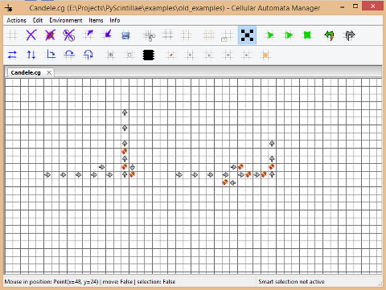

Getting started
To start immediatly with the simulator, try to open an example:
After that, you can simulate one step of the loaded automata
by pressing the spacebar on your keyboard.

You can press the play button to have a complete simulation.
The actions enabled from the keyboard are the following:
- S - Insert spark
- W - Insert arrow up
- X - Insert arrow down
- D - Insert arrow right
- A - Insert arrow left
- M - Insert Rule 30 entity (monodimensional automata)
- S - Insert Game of Life entity
You have also some shortcut like copy with Ctrl+C, or create a new
grid with Ctrl+N and so on.